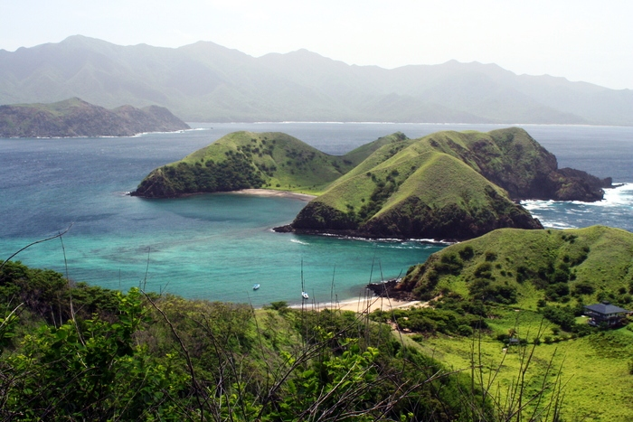
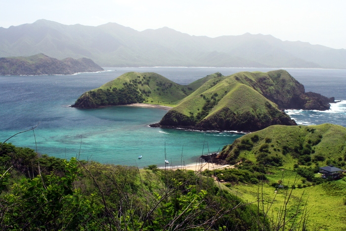

Guanacaste
Guanacaste es la provincia número 5 de Costa Rica, localizada en el extremo noroeste del país. Limita al norte con la República de Nicaragua, al este con Alajuela, al sur con Puntarenas y al oeste con el océano Pacífico.
 VolverGuanacaste es la provincia número 5 de Costa Rica, localizada en el extremo noroeste del país. Limita al norte con la República de Nicaragua, al este con Alajuela, al sur con Puntarenas y al oeste con el océano Pacífico.
 Volver